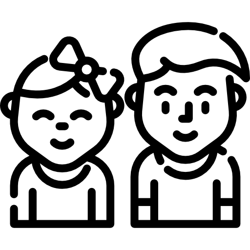

PROSJEKT "HER"
PROSJEKT "HER" has its purpose to collect data
and facilitate important information regarding absence and dropouts in school.
Our goal is to use the collected data to find out
the key reasons for why some children are not attending school.
 Where?: Redd Barna's report "Save our education" touched on 12 countries that are listed as in danger of falling behind the SDG4-goal. The SDG4-goal is a UN-made goal to "ensure inclusive and equitable quality education and promote lifelong learning opportunities for all' and has seven targets and three means of implementation.
" There are of course many countries that we believe would have great use of our product, but the country we decided to help first is one of the countries that are on the list, Nigeria.
Where?: Redd Barna's report "Save our education" touched on 12 countries that are listed as in danger of falling behind the SDG4-goal. The SDG4-goal is a UN-made goal to "ensure inclusive and equitable quality education and promote lifelong learning opportunities for all' and has seven targets and three means of implementation.
" There are of course many countries that we believe would have great use of our product, but the country we decided to help first is one of the countries that are on the list, Nigeria.
 Why?: 10,5 million (38%) of children do not attend school at all in Nigeria, this is an extremely high number, and we believe our product can reduce this number drastically by gathering data and helping local governing bodies intervene where they see fit with the help of our data.
Education is extremely important, it provides stability, financial security, equality and helps grow your local communities and society. Without education, life expectancy and happiness are both down, leading to a society that is unable to flourish and grow because it does not have the nutrients needed to grow
Why?: 10,5 million (38%) of children do not attend school at all in Nigeria, this is an extremely high number, and we believe our product can reduce this number drastically by gathering data and helping local governing bodies intervene where they see fit with the help of our data.
Education is extremely important, it provides stability, financial security, equality and helps grow your local communities and society. Without education, life expectancy and happiness are both down, leading to a society that is unable to flourish and grow because it does not have the nutrients needed to grow
 Who?: Project "Her!" is, to begin with, only focused on children aged 6-11 years. In the future this age gap is likely to increase as we would like to include a much wider age group, but for now we believe this is age-group is at the core of Nigeria's dropout problems. The teachers at the schools are responsible for follow-up and guidance when using the tablet, as well as data-collection in form of posting the tablet's SD card if the school does not have internet, but it is ulitmately the students this project is aimed at.
 How?: By implementing and giving tablets with our very own "Her!" software to the schools and having short introductional meetings with each school's staff so that they know how to use the tool. Our team will teach the school administrators and teachers how to use the program and tablet, and they will teach and see to it that the children use it correctly every day. For an insight into how the program looks for the children, head over to our "Interactive Demo" page.
How?: By implementing and giving tablets with our very own "Her!" software to the schools and having short introductional meetings with each school's staff so that they know how to use the tool. Our team will teach the school administrators and teachers how to use the program and tablet, and they will teach and see to it that the children use it correctly every day. For an insight into how the program looks for the children, head over to our "Interactive Demo" page.
By Students:
S345344
S354370